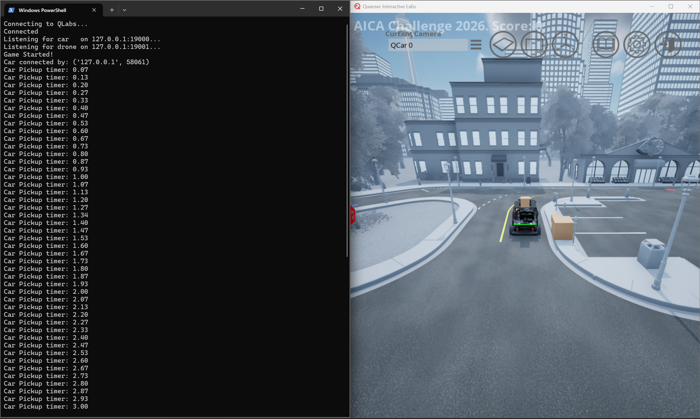

Virtual Stage Detailed Scenario
This page describes the mission environment, delivery workflow, key location data, and strategy context for the AICA Virtual Stage.
Navigation
- Scenario Summary
- Mission Objective
- System Setup
- Depot and Pickup Operations
- Vehicle-to-Vehicle Transfer
- Delivery Locations
- Delivery Completion
- Pick up and Delivery Location
Scenario Summary
- AICA Virtual Stage is a collaborative autonomy challenge where teams design and demonstrate an end-to-end delivery system using a ground vehicle (QCar2) and an aerial vehicle (QDrone2) operating in a shared mission environment.
- The scenario involves package pickup, vehicle-to-vehicle transfer, route execution, and final delivery using either window or common drop methods.
- Teams must coordinate both vehicles effectively while operating under timing constraints and predefined operational conditions.
Mission Objective
- The objective is to complete all assigned deliveries in the minimum possible total mission time.
- Mission timing starts at the official scenario start and ends after all required deliveries are completed.
- Teams should optimize routing, coordination, delivery order, and delivery decisions while following operational constraints.
- Competitors are free to choose the order of deliveries, task allocation between QCar2 and QDrone2, and how they execute the mission strategy.
1) System Setup
Each team is provided with files to spawn:
- One QCar2
- One QDrone2
Both vehicles cooperate to transport delivery packages from the depot to designated apartment objectives.
Vehicle Speed Limits
- QCar2 max speed: 13 m/s
- QDrone2 max speed: 2 m/s
Vehicles may operate below these limits, but must not exceed them.
Initial Vehicle Locations
Initial spawn positions of QCar2 and QDrone2 can be adjusted by competitors by editing the spawn_position.txt file in the competition files folder. This file is used to control the starting position of the spawned vehicle(s) in QLabs.
2) Depot and Pickup Operations
At mission start:
- All packages are located at a central depot
- The depot contains 5 delivery packages:
- 4 small packages
- 1 large package
- Both QCar2 and QDrone2 can pick up from the depot
- QCar2 can pick up small or large packages
- QDrone2 can only pick up small packages
Pickup Condition
A pickup is successful when:
- QCar2 remains stationary at the pickup location for 3 seconds
- QDrone2 hovers at 3 meter above the pickup location for 3 seconds
After the required hold time, the package is considered loaded.
Example Pickup from Depot will update with new depot location

Carry Constraints
Current carry limits at a time are:
- QCar2: 2 small packages or 1 large package
- QDrone2: 1 small package
Example for Qcar2 with 2 packages

3) Vehicle-to-Vehicle Transfer
To enable collaborative autonomy, transfer is allowed in both directions:
- QCar2 → QDrone2
- QDrone2 → QCar2
Transfer Condition
A transfer is successful when:
- QCar2 is stationary
- QDrone2 is positioned directly above QCar2
- QDrone2 maintains approximately 3 meter height above the car
- The required transfer condition is maintained for 3 seconds
After this, package ownership transfers to the receiving vehicle.
Example Transfer
QCar2 → QDrone2

QDrone2 → QCar2

4) Delivery Locations
Each delivery objective (apartment) has two delivery options.
A) Apartment Window (Drone Only)
- Delivery is performed directly to the apartment window
- Only QDrone2 can perform window delivery
- This is the faster and higher-value delivery mode
B) Common Drop Location
- A shared drop point is provided for each apartment building
- QCar2 or QDrone2 can deliver to this location
- This is more flexible, but may be less favorable for scoring depending on the scenario configuration
Floor Drop-Off (Window Delivery) v/s Common Drop-Off
- Delivery locations may include both floor drop-off targets and common drop-off locations.
- Floor drop-off deliveries can receive different score bonuses depending on the floor level.
- Common drop-off deliveries follow the standard scoring method without floor-based bonus.
- Teams should consider both the delivery type and the scoring difference when planning delivery order and strategy.
5) Delivery Completion
A delivery is considered complete only after the package is successfully dropped at the designated drop-off location according to the scenario logic.
Window Delivery (Drone)
- The drone must hover 3 meter above the window landing pad for at least 3 seconds
Example Window Delivery

Common Drop Delivery (Car or Drone)
- QCar2: Must remain at the drop location for at least 3 seconds
- QDrone2: Must hover 3 meter above the drop-off location for at least 3 seconds
Example Common Delivery by Car

6) Pick up and Delivery Location
- Pickup: P
- Small packages: D1, D2, D3, D4
- Large package: D5
Key Location Coordinates ( Will be updated based on new final locations)
| Location | Node | x | y |
|---|---|---|---|
| P will be updated | 25 | -7.4888 | 11.0093 |
| D1 | 2 | 11.2739 | -10.8465 |
| D2 | 14 | 22.5478 | 29.6703 |
| D3 | 20 | 0 | 44.9735 |
| D4 | 22 | -19.8412 | 29.6703 |
| D5 | 10 | -12.8205 | -4.5991 |
Strategy Note
Teams are free to choose delivery order, task allocation, and delivery method based on their own mission strategy.
Back to: